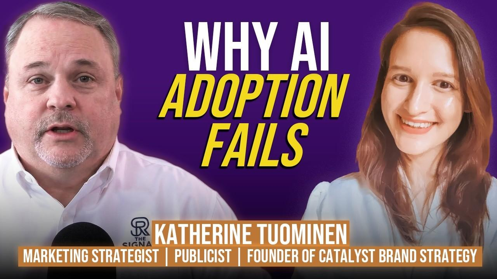
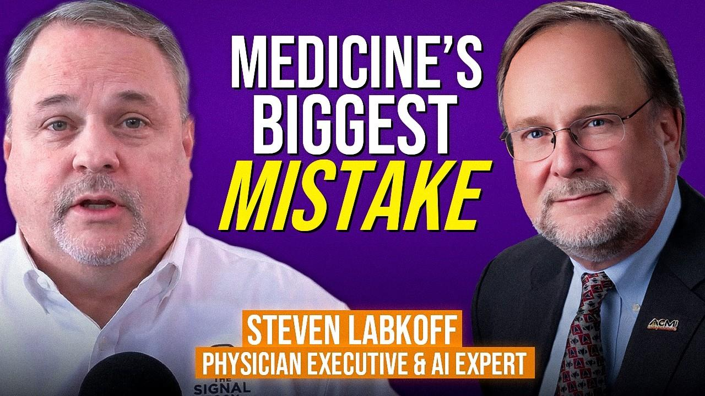

All Episodes
Conversations with leaders shaping the future of healthcare AI and data strategy





Poonam Patel
Healthcare Is Losing Its Best People | Provider Burnout, Trust & Ethical Leadership in AI
Listen Now

Andre Samokish
Strengthen your AI Projects in 2026. Privacy and AI Governance Insights
Listen Now
Carly Caminiti
Good People Are Quietly Quitting: Ethical Leadership, AI Strategy & Why Culture Determines AI Success
Listen Now
MarKeisha Snaith
Healthcare Experts on Ethical AI in Operational Reality: AI Transformation Strategies and Healthcare Innovation
Listen Now
Amanda Roser
Healthcare AI and Rare Disease Caregiving: Why Patient Advocates Deserve a Seat at the Table
Listen Now
Dr. Natasha Dole
AI Regulation in ER and Clinical Judgment: Why AI Tools Must Be Designed for 3 AM, Not 3 PM
Listen Now
Gary Cao
Enterprise AI Journey: Agentic AI, Generative AI and Data Foundations in Healthcare
Listen Now
Brian Sutherland
From AI Strategy to Execution: Ethical Leadership, Trust and the Operational Reality of Healthcare AI
Listen Now
David Finkelshteyn
Why AI Verification Is the Real Bottleneck in Pharmaceutical Drug Discovery
Listen Now
Guman Chauhan
No Alerts, Still Breached: Ethical Leadership in AI Security and Why Undetected Cyberattacks Threaten Healthcare AI Governance
Listen Now
Dr. Mark Gendreau
Healthcare Leadership: Balancing AI, Human Judgment and Clinical Trust
Listen Now


Asha Mahesh
Responsible AI in Healthcare: Ethical Leadership, AI Governance & Ways of Working
Listen Now

Anitha Mareedu
Healthcare AI Security Risks and Cybersecurity Leadership Challenges
Listen Now
Keshavan Seshadri
AI Explainability, Algorithmic Bias, and Human-in-the-Loop Design in Healthcare
Listen Now
Carol Velandia
AI and Language Access in Healthcare: Communication Equity and Patient Safety
Listen Now
Susie Branagan
AI Governance in Healthcare: Just Culture, Emotional Readiness & Trauma-Informed Leadership
Listen Now
Danette McGilvray
Data Quality and AI Strategy: The Rising Cost of Ignoring Data Governance
Listen Now
Ritu Chakrawarty
Tailoring AI Strategy for Healthcare Leaders: Product Adoption and AI Literacy
Listen Now
Larry Kuhn
Healthcare AI Leadership: Trust, Psychological Safety & the Seven Dimensions of Credible Authenticity
Listen Now
Ratnadeep Bhattacharjee
Healthcare Data Readiness and AI Adoption: Why 85% of Organizations Aren't Prepared
Listen Now
Dr. Barry Chaiken
Redefining the Patient-Physician Journey with AI: Trust, Interoperability, and the Future of Healthcare 2050
Listen Now
Dr. Barry Chaiken
Redefining the Patient-Physician Journey with AI: Ambient Listening, Automation Bias, and Revolutionary Health IT
Listen Now